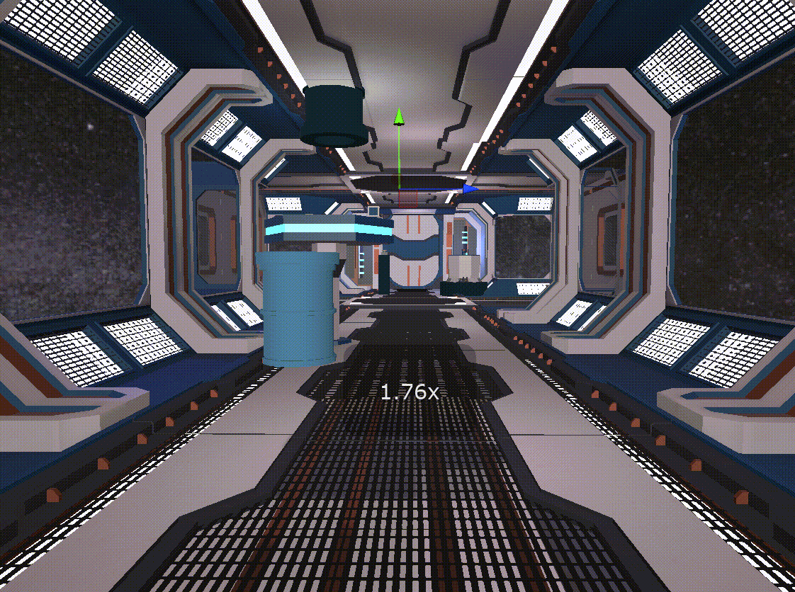

事件场景
从飞船空间进入、系统修复、共同驾驶到终章收束，第四章把合作置于更高风险、更高强度的叙事情境中，让每一步配合都更具决定性。

第四章作为终章，把前面几章建立起来的协作关系推到最高压也最开阔的状态里。 飞船空间、共同驾驶、路径判断与终章收束同时发生，重点不再只是"能不能一起做事"，而是能否在高风险环境中保持信任与共识。
这一章把协作从情绪陪伴推进到共同承担。用户需要一起修复、一起判断、一起穿越危机， 最终把虚拟空间里的同行感转译为现实里更愿意交流与回应的关系结果。
从飞船空间进入、系统修复、共同驾驶到终章收束，第四章把合作置于更高风险、更高强度的叙事情境中，让每一步配合都更具决定性。
关系推进到最后阶段时，真正困难的不只是表达本身，而是能否在压力下继续相信彼此、及时共享判断，并共同承担选择结果。
通过终章的高压协作把"同行"从概念变成经验，让用户在共同完成危机处置后，把虚拟中的共担感带回现实交流之中。